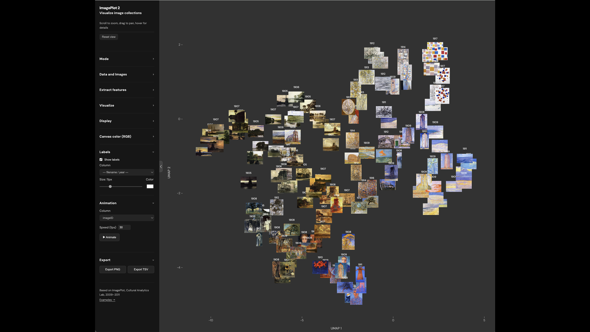
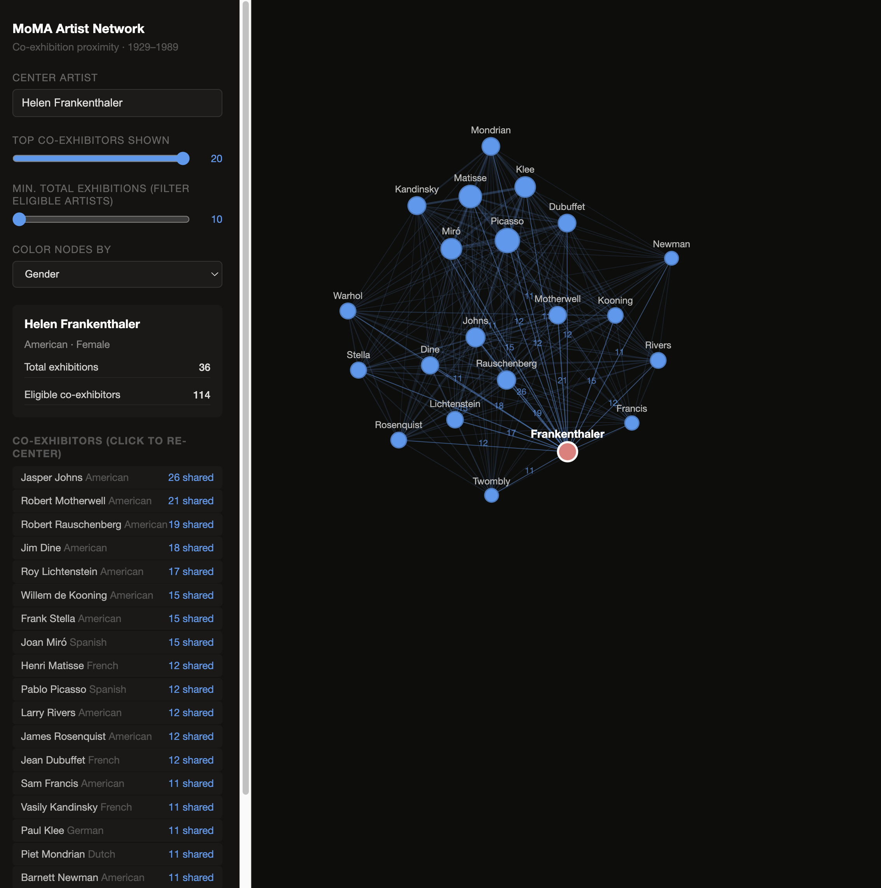

Interactive tools and visual essays by Lev Manovich
A collection of browser-based tools for exploring cultural data, and selected essays presented as interactive HTML documents. All tools run directly in the browser — no installation required.
Since 1994, Lev Manovich has published all his work online, experimented with new ways to present his ideas and research using new media technologies, and explored their artistic possibilities through projects such as Little Movies (1994–1997), Soft Cinema (2002–2005), and ImagePlot visualizations of large cultural datasets (2009–). This repository is the latest step in that ongoing practice, now taking the form of browser-based interactive tools and visual essays built with AI coding assistants.
A browser-based tool for the visualization and analysis of image collections. Load any set of images, extract 77 visual features automatically, and explore the collection as an interactive scatter plot — with images rendered directly as data points. Supports PCA, t-SNE, and UMAP projections, compare mode for two collections side by side, and animation along any feature axis.
Originally developed as part of cultural analytics research at the Software Studies Initiative (2009–2011), ImagePlot 2 is a fully redesigned browser-based version.

An interactive timeline tracing the history of automation in photography — from early mechanisms for capturing and processing images to contemporary AI-driven tools for editing, generation, and distribution. Each entry marks a moment when photography was technically or conceptually transformed.
A browser-based interactive tool for exploring patterns in MoMA exhibitions between 1929 and 1990 using 500 most exhibited artists during this period. Explore the networks between artists based on co-occurence in exhibitions, and filter by decade, geographic region, gender, and more.

Lev Manovich is Presidential Professor at The Graduate Center, City University of New York, and a leading theorist in computational media theory, software studies, cultural analytics, and AI media studies. His books include The Language of New Media (MIT Press, 2001), Software Takes Command (Bloomsbury, 2013), and Cultural Analytics (MIT Press, 2020).